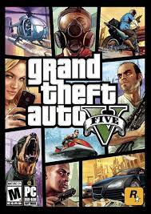

Mijn favoriete hobby is gamen. Gamen is iets wat veel mensen in hun vrije tijd doen. Er bestaan veel games in de "game-wereld"
Ik game al sinds een jonge leeftijd. En ik vind gamen op de dag van vandaag nog steeds heel leuk
Sinds ik al zo'n 5 of 6 jaar ben, begon ik met gamen. Ik kreeg op m'n 5de een Nintendo DS van mijn moeder, en mijn broertje kreeg er ook eentje. We raakten heel snel verslaafd aan de DS, en stiekem zaten ik en mijn broertje s'nachts te gamen terwijl mijn ouders aan het slapen waren.
Een paar jaar later kreeg ik een eigen pc, waar ik snel verslaafd aan raakte. Helaas ging die wel na een paar jaar stuk.
Tegenwoordig ben ik een beetje verslaafd aan games, en speel lang games door de dag heen (als ik dan vrij ben). Zelf vind ik gamen erg leuk, en het dood ook de tijd. Een van mijn favoriete games is GTA 5
